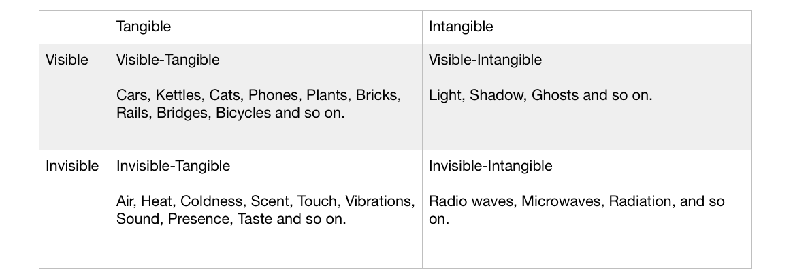
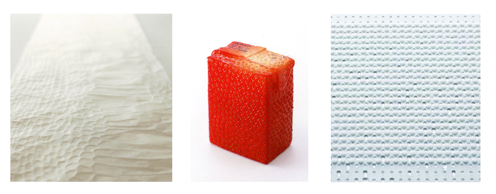
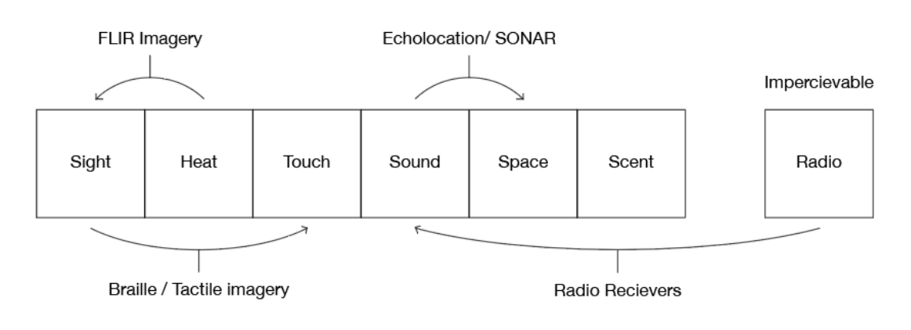
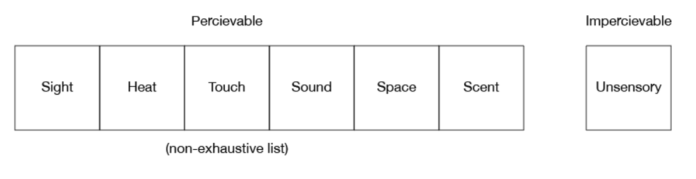
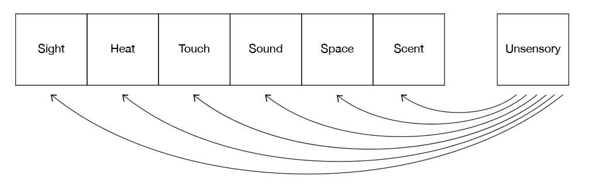
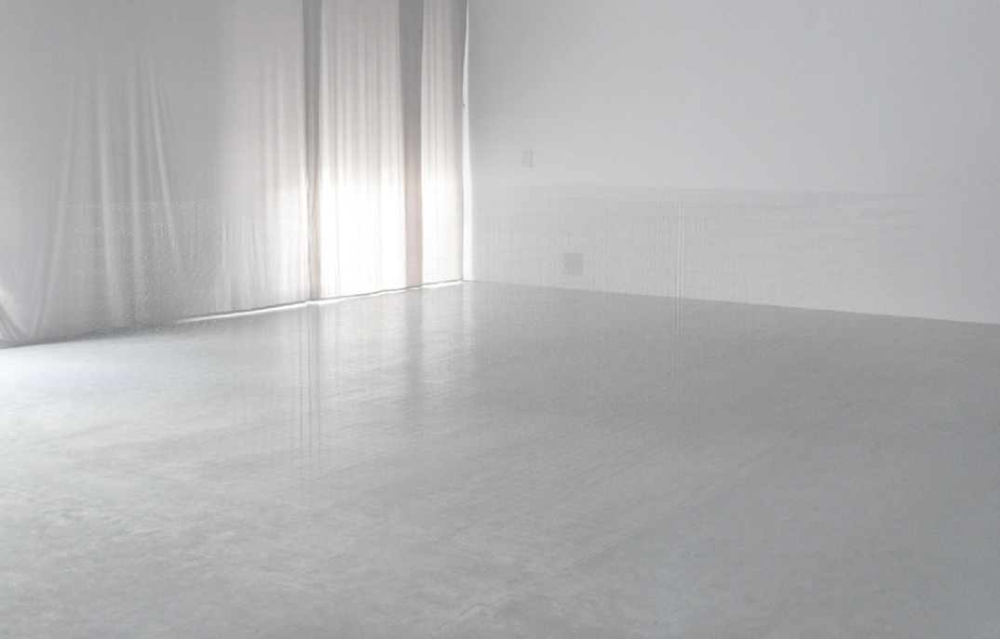
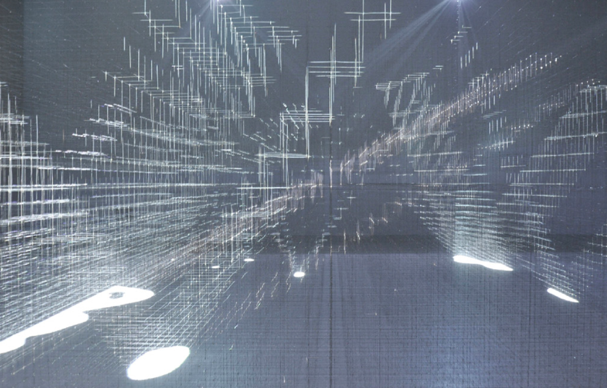
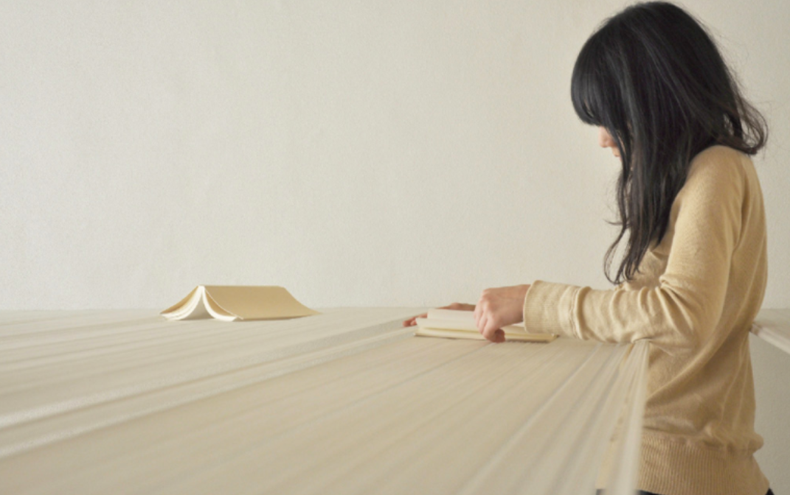
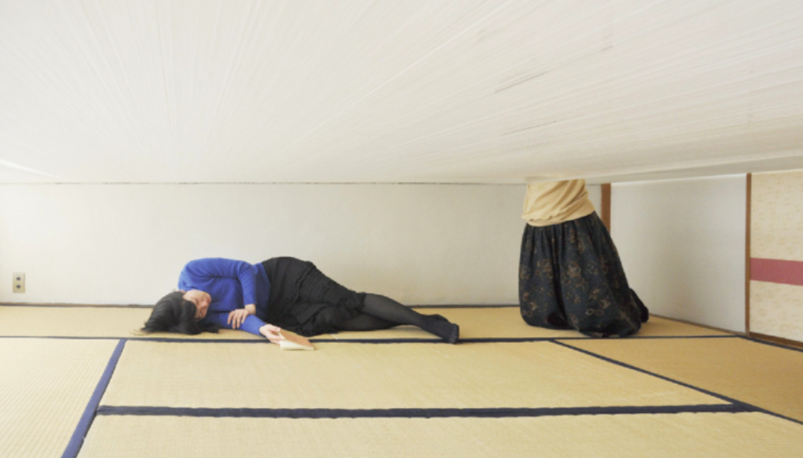
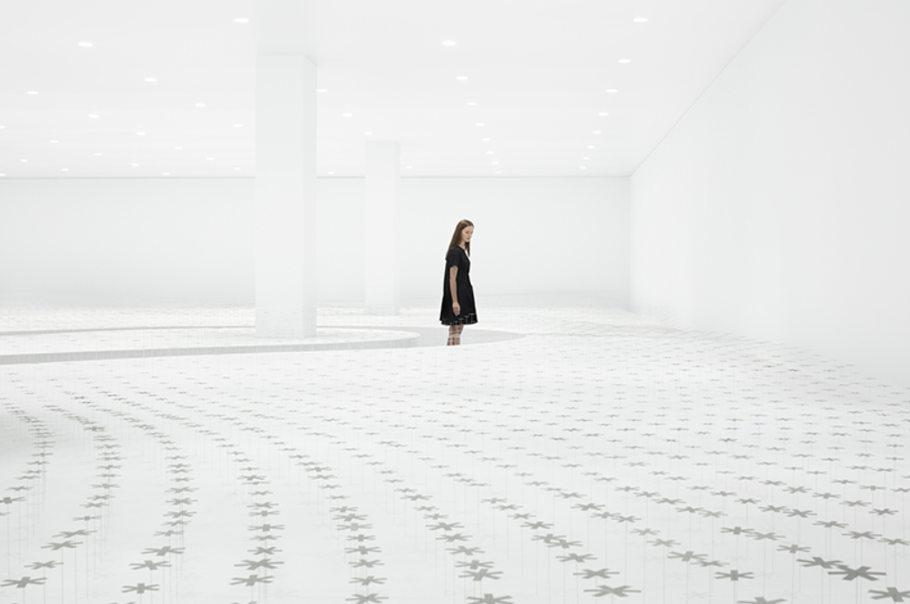

Memo
Unsensory—
Designing with the Invisible
Sunday
2022 01 23 - 6:00 PM
Out of Sight, Out of Mind.
A Human Being is a Bundle of senses working hard to perceive the World. Eyes, Ears, Skin and the others are called sensory receptors, but the images carried by these words are much too passive for sensory organs. Human sensors are Boldly open to the world. They aren’t “receptors”, but active, positive organs. An unlimited number of invisible sensory tentacles sprouting from the brain are exploring the world. Let’s think about human beings with this image in mind.
— Hara Kenya, “Haptic” (2014)
In this world, there are essentially four types of things.
Each thing seemingly exists neatly within its box — however, the divisions are not innate, but are experienced due to the boundaries of human senses: the Tangible and the Intangible are divided according to the bounds of our brains and biology; the invisible-intangible is just as present, and just as real as light and heat — but sit just outside of our ability to be aware of them.
Humans have invented tools to sense and measure the invisible and intangible — artificial eyes, ears, and fingertips that let us push our hands beyond the curtains of standard sense — extensions of the sensory self. By extending an antenna and tuning into these frequencies, we can dip our senses into an invisible presence, sub-dermal to reality — The unsensory.
The Sensory
The Sensory is the world as experienced by our senses — Light, Heat, Scent, Sound, Touch, Texture, Balance, Weight, and so on. Our body is a finely-tuned sensor for multi-layered channels of information, processed instantaneously by the brain to smoothly build our understanding of the world around us, and ourselves within it.
(Left to Right: Kuma Kengo’s “Cast-Off Snakeskin paper towel”, Fukasawa Naoto’s Juice Skin Packaging, and Hara Kenya’s Humidifier)
In his exhibition “Haptic”, Hara asked designers to design with special attention to texture and tactile information — either expressing information through a haptic channel or by expressing haptic information visually. For instance: translucent paper towels that mimic the texture of shed-off snakeskin, Juice Boxes whose surfaces mimic the skin of the fruit contained within, and a humidifier that evaporates a grid of individual beads of water like sweat from the pores in the skin. These all heighten some aspect of the tactile, cutting a familiar haptic idea from one context and pasting it into another.
The Cross-Sensory
Likewise, the “Cross-Sensory" could be seen as the transfer of one sense to another. For example, the invention of Braille and Tactile images cross-senses the visual (Written word, Imagery) into the Haptic. By use of FLIR imagery, we can transfer the sensory world of Heat to the sensory world of Vision. Likewise— by use of Echolocation, the physical world is cross-sensed through intuiting information from sound — a mental image or proprioceptive sense of space. Perhaps the most common form of cross-sense, one you’re experiencing right now, is the cross-transfer of written word and imagination, as when a scene, sense, or object is described and then pictured in the brain (or vice-versa).
Those with the neurological condition Synesthesia can naturally Cross-Sense: they may experience sound as visual flashes of colour and shape, or any other cross-sensory expression — those with Spatial Sequence Synesthesia experience sequences of numbers as physical space, for instance seeing months as a spiral or column. Those with Mirror-Touch Synesthesia may physically feel the sensation of being tapped on the shoulder if they observe another person being tapped.
The Unsensory
If that’s the Cross-Sensory, The “Unsensory” could be defined as the imaginary sensation of something intangible, the transmutation of that which is intangible into the realm of the tangible— an imaginary, hallucinatory but tactile sensation of the impossible to sense.
For instance, there exist people who purport to be able to sense the invisible presence of electromagnetic frequencies. Those with Electromagnetic Hypersensitivity (EHS) claim that they have averse reactions to electromagnetic fields at both intense and everyday levels. Symptoms vary between individuals who claim to have the condition: Headaches, Fatigue, Stress, Goosebumps, and Pain. Those with the condition often attempt to live electromagnetic-free lives, often retreating to remote locations and relying on electricity as little as possible. However, despite very real emotional and physical responses, researchers have found that those with EHS were unable to discern between being exposed to electromagnetic fields in a blind setup — suggesting that the response is psychosomatic in nature.
Even if its validity is doubtful, it’s still a compelling idea. Since we can’t sense it directly, to engage with the Unsensory we must interact on a Cross-Sensory plane. Let’s design into this imaginary sense as if it had texture, weight, presence, and so on.
The Wind blows through a Magnetic Field: Art and Design in an invisible world.
Standing in a field of wheat on a windy day, you can watch the full panorama of the wind’s shape and weight pressing sluggish waves across the gold. If you were to pick a stalk from the field and walk to someplace barren, without grain or grass, you could only use it as a probe to intuit the rippling of the wind at a single point — you’ve essentially “tuned in” to a point in the wind in the same way as a receiver tuning into a single frequency of radio.

Fields of informational “dots” expand a pinpoint of sense into a sensory space. The back of the eyeball is a grid of individual cells that sense light in the world around us, and amalgamate it into the sense of vision. Similarly, a digital photo is a Grid of Pixels that amalgamate to construct the impression of an image from individual pinpoints of colour and tone. Likewise, the Skin is a grid of individual nerve cells across which you can feel the stroking of a fingertip, amalgamating pressure and texture into the sense of touch. If we can register sensory information at a single point, we can sense its shape and space by expanding its dimensions in this way.

(Magnetic Fields, 1969, at the MACBA — Photo: Roberto Ruiz)
One artwork that I feel is especially relevant is the sculpture “Magnetic Fields” by the Greek sculptor Takis. Magnetic pendulums swing over a field of magnetic stalks, which sway and bend towards and away from the pendulum’s magnetic presence. The size and shape of their invisible influence becomes clear through observation of their effect on the field of stalks, similar to wind over wheat — This way, the invisible world of magnetism can be cross-sensed by its physical effect.
Similarly, When you place an electronic object on Anthony Dunne and Fiona Raby’s “Compass Table", it allows you to see the presence of the invisible magnetic fields spooling out around it. This example is especially domestic, making palpable the presence of the electromagnetic fields that emanate from appliances and devices inside of our own homes.
 
Nakamura Ryuji’s sculpture “Spring” is an extremely thin lattice of piano wires. In an evenly-lit room, the lattice is barely visible, almost ghost like. However, when a spotlight is shone through it, it becomes a three-dimensional canvas for light, a field giving tangible form to the projected cone.
While these projects aim to give demonstrate something that is present but invisible, these next two projects aim to imply the presence of something that is actually absent.
 Another project by Nakamura, “Pond”, uses 4000 elastic strings to create a tangible “Water-Level” within a home, 70cm off the ground. Here, a permeable barrier, like the surface of water, creates a haptic plane that gives form to an imaginary space.
Likewise, Nendo’s installation “Breeze Of Light” seeks to create the impression of an invisible flow of air through a room by using flowers made of polarised film to create rippling waves of shadow across the space.
In this case, the impression of the presence of wind is inferred by observing (Cross-Sensing) the ripple of the shadow within the installation. If we somehow were unable to feel the wind’s touch on our skin, It would become an unsensory presence, only apparent through its affect on the flowers around us.
In summary, we can use this metaphor of fields as a template to Cross-sense the Unsensory. Let’s imagine how we can do this for the phenomenon of Radio Waves.
Coming in Part 2: "The Presence of Radio"
Short Story: Lunar Day
Thursday
2021 09 02 - 2:00 PM
I originally wrote this short story in 2018 as Sample Text for a Typeface designed by a friend of Mine, each paragraph typeset in increasingly heavy weights. I still quite like it, so I'm putting it here.
***
This morning I woke up an inch above my bed. Disoriented and still shaking off the dust of sleep, I fumblingly turned on my bedside lamp, which itself was an inch midair above the table, the table’s feet suspended an inch above the floor. Around my room, every object was levitating yet perfectly still, as if suspended buoyant underwater.
Tentatively, I attempted to shift my weight over the side of the bed, the duvet floating up towards the ceiling as I unwrapped myself. The bed was heavy enough that I could grab onto it to get myself upright and carefully lower myself onto the floor. Scraping the carpet with my toes, I was able to clumsily propel myself to the window, opening the blind. The morning sky was filled by an expansive creamish terrain, pockmarked and riddled with divots and horns. Its surface seemed close enough to scrape the radio antennae on the roofs of neighbouring homes, filling the air with a pale otherworldly glow.
Breakfast was difficult. The water for my coffee refused to pour downwards, instead streaming upwards and dissipating into a scalding hot stratum of fog at about eye level, forcing me to hunch over to stop my glasses from clamming up. I cracked some eggs onto the frying pan, where they began to hover in slowly-spinning discs as they fried. The cheese in my fridge all seemed to be sticking magnetically to its ceiling, vibrating with a dull hum.
From the kitchen window I watched as pedestrians grappled unsuccessfully at lampposts to stop themselves from being pulled into the Lagrange point between the Earth and the Moon. Frogs flung through the air above the roofs, their jumps having propelled them at unexpected speeds and trajectories, each glassy-eyed face a picture of surprise as they rocketed into the atmosphere. Upside-down flying herons snapped each one up with zeal.
As the Moon loomed closer and closer, the atmosphere was saturated in an electric-tasting light so lush it seemed like a liquid. The entire contents of the nearby aquarium had floated free of the tanks, forming a silver cloud layer of jellyfish spooling their shiny tendrils, writhing black octopuses, and spider crabs snapping at algae, all punctuated by rod-like vertical eels and shoals of mercury-tinted garfish murmurating as they too were snapped up by the herons.
In a single moment, the golden light was suddenly subsumed by black as the Moon seemed to flip over itself to reveal its dark side, receding slowly into the inky sky. No longer projected by the magnetic pull of its gravity, the objects around the room softly descended onto their respective places.
The gradual ombre from the Moon’s gravity to the Earth’s slowly saturated me enough to make me aware of the weight of my limbs, the afterimage of the warm glow of lunar light still ringing in my head. Everything was now dipped in a deep soporific lacquer, filling ankle-deep around my feet and furniture as I waded back to my bedroom. The windows open, the liquescent essence of night had flooded back into the room, a bathypelagic dark casting a perfect anaesthetic negative of its volume. My body heavy as lead, I could barely stay awake as I lay on the mattress, the gentle hum of the house’s electricity lulling me once more into sleep.
Sensing Magnetism
Wednesday
2021 06 09 - 6:00 PM
(Adapted from a Diary Entry)
It's often a favourite moment of mine whenever a person takes out a compass in the midst of some paranormal event in some Horror or Sci-fi Movie I'm watching and sees it spinning and pointing erratically. Magnetism is a powerful physical force that constantly surrounds and permeates us, but it's not something we can directly sense. We know it's there, but it's invisable -- Imagine if you could only feel if it was hot or cool by use of a thermometer, or if you could only sense the presence of sound through a decibel meter. So, even though it's something so intangible, there's a really specific eerieness to seeing it being somehow meddled with, like the actual fabric of reality around you is being ruffled or passed through invisibly.
Of course, we're able to feel a physical sense of magnetism by holding a magnet itself, either feeling the strength of its pull towards and attachment to ferrous metals, or its slippery repellance from another magnet. I wonder what it would be like if we could directly feel the sensation of this pushing and pulling from magnets at all times -- it would probably feel like a "toughness" or "looseness" or maybe "hardness" or "softness" of the air around it, requiring extra strength to push through or otherwise throwing you off balance by suddenly slipping through it -- Kind of like walking against a strong gale that pushes you backward when you jump, or makes you stumble forward when it suddenly relents. It's also nice to imagine playing with just a small magnet, feeling your fingers pushed and pulled by it as you pass your hand through its field.
Although Humans may not be able to sense it, Scientists have identified Magnetoreception in several organisms. Magnetotactic Bacteria align themselves according to the earth's magnetic field, a behaviour called Magnetotaxis, using nanometre-sized magnetite or iron sulfide enclosed within their cells, chains of which essentially acting as interior magnetic needles. Lines of these bacteria magnetically stick together, their bodies forming a microscopic compass in tandem.
Magnetoreception and Magnetotaxis has also been observed in many types of animal - invertebrates, fish, mollusks, amphibians and mammals. Researchers observed that by changing the direction of a magnetic field around a tank of Sockeye Salmon, they could influence the direction of their swimming, and when Red Foxes pefrorm their high-jumping attacks to catch small rodents, they tend to do so in a north-eastern compass direction, suggesting some ability of magnetic orientation. Even Cattle and Roe Deer have been observed to align their bodies magnetically when resting and grazing -- Researchers used Satellite imagery to analyse their headings when resting, and found a strong preference for the north-south direction. They also observed that herds resting near electromagnetically-turbulent areas such as those around High Voltage Power Lines aligned themselves in random directions, further supporting their usage of magnetoreception.
Despite the large number of animals observed to be able to sense magnetism, Researchers have yet to definitively identify a specific sensory receptor for magnetism -- the closest lead being the identification of Magnetite in the beaks of Homing Pidgeons, Theoretically explaining their ability of nighttime navigation. I wonder what it would be like to have this innate sense of direction, I imagine it would be as unthinking as any other proprioceptive sensation. Some languages, such as Guugu Yimithirr and Sambali, use north/ west/ east/ south in place of left/ right/ forward/ backward, but it seems as if this is largely influenced by the presence of geographical markers such as Mountains / the path of the sun plus acute proprioceptive ability instead of a direct "sense" of the earth's magnetic field.
Like we use thermometers or decibel meters to Tabulate an invisible sensation into a measurable form, I wonder if it's possible to do the reverse. The "FeelSpace Navibelt", invented by Udo Wächter, aims to augment Magnetorception though physical means by use of weak motors in a ring around the body, the one pointing northmost faintly vibrating. In the six weeks of testing it, Wächter found he had developed an innate sense of direction that transcended only a sensation of buzzing; his brain had transformed the faint touch into a large part of its direction-keeping system so deeply that he could even feel it in his dreams-- After removing the belt following weeks of wearing it, Wächter said he felt so completely disoriented that he soon bought a personal GPS try to regain the sense of direction he had felt while testing the belt. Today, the belt is used to help direct the Blind while navigating.
I wonder if you could do the same kind of thing for more local fields, like a small ring that buzzed according to how strong the magnetic field in your immediate vicinity is. Perhaps If you filled an entire room or house with hundreds of compasses, you could get it dense enough that you could hallucinate a sensation of the currents and flowing of magnetism by observing the subtleties of its effect on the compasses around you, like feeling a breeze in a field by watching the stalks wave around you.
Relevant Links:
Wikipedia - Takis (Magnetic Sculptor)
Wired - "Mixed Feelings", 2007
Steve Roden - Crop Circles (Soundtrack to writing)